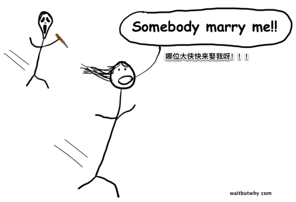

啊哈，光棍节到喽！
在11.11已经沦为疯狂购物节的时候，我想，我们还是有必要回归本源，来和大家聊聊如何「脱单」吧，准确的说，是聊一聊怎么样认真地挑选自己的另一半。那些只希望今晚有一些特别惊喜的小伙伴们可以不必太认真。
对于「单身狗」来说，生活经常会充满各种羡慕嫉妒恨：

有很多非权威的调查显示，已婚人群的平均幸福指数要高于单身人群（当然显著高于离婚人群）。所以，站在「单身狗」的角度把幸福美满的婚姻和那些不咋滴的婚姻分开来看，心理感觉或许会稍微平衡一些：
不过，对于那些急于脱单的人来说，他们的行动清单上永远有一条是「赶紧找到人生的另一半吧」。相对而言，那些已经深陷失败婚姻的人群的行动清单上的项目往往会更多：
1）结束这段糟糕的关系
2）修复自己受伤的心灵
3）开始另一段美好的婚姻
从这个角度来看，单身狗并不是最可悲的，起码算是一张白纸。
思考如何正确的挑选人生伴侣这个问题，有着类似思考「宇宙的边界」或是「死亡的本质」这类问题一样的重要性和复杂性，我们很难直观的发现这类问题的答案，以至于我们很少仔仔细细、认认真真的思考它们。
可是，挑选人生伴侣这件事和宇宙或是死亡问题不同之处在于，它是在自己的掌控之下的，因此，在做决定的时候，充分认识到这个问题的重要性和考虑到这个问题涉及的方方面面还是很有意义的。
那么，选对一个合适的伴侣这个问题究竟有多重要呢？
让我们假设你可以活到90岁，当然如果你和你的另一半都可以这么长寿，那么你们将在一起共度几十年。
我很肯定，没有七八岁的爷爷奶奶会看这篇文章，因此，无论你是谁，还剩下几十年，这是一个相当长的时间。
（当然，有人说会有离婚的情况发生呀，不过基于最新的调查显示，86%的年轻人都是希望可以和自己目前的伴侣共度余生的，要是这个调查是在中年人群进行的，恐怕没有这么乐观，不管怎么样，我们就这么假设吧）。
基于这样的假设，挑选你的另一半，就意味着挑选很多很多，包括挑选另一个家庭，谁会影响你子女的人生，接下来的两万多次晚餐和谁一起共进，未来的一百多次旅行度假是谁陪伴，你的职业生涯辅助者，等等。
所以难怪有人把婚姻比作第二次投胎，对于每个人的人生来说都太重要了。可是，为什么还是有那么多看上去不错，又聪明的人最终确被不幸的婚姻所牵绊呢？
我想或许有以下一些因素：
人们总是对婚姻寄予错误的期望
调查显示，人们在单身的时候，往往对婚后生活没有一个合理的预期。特别是那些闪婚者，会发现婚后的生活和自己原先设想的有着千差万别，会在一些实际生活的琐事中，一次又一次的颠覆对方先前在自己心中的形象。
这倒没啥好惊讶的，人们总是在事情发生之后才会有所悔悟，但是人们又往往没有可以试错的机会，决定一旦做了，就没有后悔药了，有些事情，就真的只能交给时间来检验。对于每一个人来说，脱离单身后的生活肯定和之前的生活是大不相同的，而没有试过，谁又能真正的知道婚后生活会是什么样的场景呢？
社会总是给人们错误的引导
社会普遍认为我们要跟着感觉走，用浪漫主义情怀影响我们
如果你是一个自己开公司的商人，那么，你去学校进修，读个EMBA什么的，然后创建一个可行的商业计划，认认真真的运作，这在逻辑上都是说的通的。像这样的步骤是做好事情并少犯错误的一种方式。
但是，如果说有人想采用相同的方式，去学校进修如何选择另一半，并且为此制定一个详细的行动指南，并且用个表格来认认真真的记录自己的选择过程，那么社会普遍的价值观会认为这样的行为太机械，太钻牛角尖，或是太可笑了吧。
然而，社会普遍的对待约会的观念又是那么的虚无飘渺，总是宣导人们要跟着感觉走，并且不能被事物的表面所蒙蔽，通过自己的内心感受来判断。如果商人做生意也是采用这种跟着感觉走的方式，那么可想而知，要想成功是多么的不易，除非真的是运气选手。
跟着感觉走，这就是所谓的社会对于我们挑选另一半时施加的浪漫主义情怀。
社会普遍认为明目张胆的挑选另一半是丢人的事情。
你认为你在选择约会对象的时候，什么因素占据了主导地位？恐怕现在的社会，当你和一个高的，矮的，胖的，瘦的，专业的，受过还是没受过高等教育的人约会的时候，决定最后能否走到一起的关键，恐怕并不是这些个人的这些特质。
换个角度看，很多人会在挑选对象这件事情上会局限于自己的交际圈子，最终只能在很少的人群里挑选相对适合自己的人选。而现如今很多人会通过各种在线婚恋网站，线下的交友派对等方式，来扩大自己所谓的交际面，虽然这样的方式未必完全靠谱，但这不失为一种明智之举，起码会给自己带来很多的选择余地。
但是传统的社会观念对这种明目张胆的找对象方式是嗤之以鼻的。我们通常认为一对新人最好的开始方式是偶遇啦，或是熟人介绍啦，先从朋友开始慢慢展起来啦，这样的模式。虽然，这种观念随着相亲节目的兴起有所改观，但是传统的社会观念还是有它自己的固执态度。
人们总是会被社会上身边的各种人所催促
传统的社会观念认为，最好的结婚年龄在25～35岁之间（城市里，农村普遍还要早一些）。虽然我们都知道，宁缺毋滥，但是，当你的父母发现37岁的你还是个单身汉，而和你童年的邻居家的孩子二狗子都已经是两个孩子的爸爸了，想必你的父母会为此而操心吧？这个时候催促你快点成家，就很有可能迫使你走向的不是先前楼梯上面几级的幸福婚姻，而是堕入到下面的不幸中去了，而再回头看，想要获取单身时的幸福感，都已经抬头莫及了。
我们的生理构造在挑选对象这个问题上也是不利的
人类进化成现在这个样子已经有很长的时期了，但是仍然无法很好的理解和适应与另一个人在一起紧密的生活50年以上。
当我们和某人对上眼的时候，我们会有一系列的生理反应，像是在说「好吧，我们上！」，体内各种化学反应促使我们陷入爱河。我们的大脑可以不断不断的重复同样的过程，总是会期望更新鲜，更刺激的事物，而当我们被一段固定的关系所绑定之后，需要我们主观上人为的去主动限制自己这种天生的生理状态。
繁衍后代的使命感也在使坏
对于希望有自己的孩子的女性来说，最好都是能在四十岁之前搞定。因此，很多人迫于这种压力，在挑选另一半上没有时间去精挑细选。而对于男性来说，这一点会相对好一些，很多人情缘暂时不要小孩，也要等到合适的人出现，因为男人等得起。
所以，当你看着这样一群不清楚自己想要一段什么样的感情，而且被不靠谱的社会舆论包围着、逼迫着、催促着，同时还受到自身生物因素（着急着繁衍后代）困扰着的人，你又能指望他们能作出何种正确的选择呢？
这有点像是佛家所说的「种恶因，得恶果」，很多人在作决定之前，就没有找对方向，因而，往往会成为不幸婚姻的牺牲品。我们来看几种典型的例子：
过度的浪漫主义情怀
这类过度浪漫的人，往往认为两个人的结合只要基于爱情就可以了。浪漫的爱情是婚姻的基础，真爱可以造就一场幸福的婚姻。可是，实际上，真正的婚姻光有爱是远远不够的。
这类人，会一直忽略平日里和自己另一半的争吵，一会一直忽略自己相对单身的时候变得更糟糕的生活状态，他们相信一切都是天注定的，相信只要两个人是相爱的，其他都不是问题。也就是说，拥有这种过度浪漫主义情怀的人，一旦认定了和某人共度一生，那么他将紧紧抓住不放，即便这是一段50年之久的在一起并不开心的婚姻。
单身恐惧症

恐惧往往是导致人们做出错误决定的罪魁祸首。不幸的是，在面对什么时候结婚以及和什么样的人结婚这样的问题时，往往充斥着各种各样的恐惧和害怕。害怕自己是小伙伴里最后的单身狗，害怕自己在参加孩子家长会的时候是最老的家长，甚至于仅仅是害怕成为别人茶余饭后谈论的对象。所有的这些因素，都有可能让我们做出仓促的决定，而陷入一段并不尽人意的婚姻。而实际上，我们最应该感到害怕的是，如果没有选对人，我们很有可能会在不幸福中度过自己剩余的三分之二的人生。
过度的在意他人的看法
有些人就是这样的，做什么结论的时候都特别的在意周围人的看法。可是，选对象这件事，是完完全全个人的私事，而且非常的复杂，每个人有每个人的情况，其他人真的很难设身处地的帮你考虑。因此，他人的意见指能作为以个参考维度，不能左右你的决定。
这当中最典型也是最不幸的例子，就是明明是非常相爱和合适的两个人，因为他人尤其是家人的反对，或者是别的因素比如最典型的宗教信仰的不同，而被硬生生的拆开。
也有相反的情况，在外人看来很好很登对特别应该在一起的两个人，真正结合以后并不一定可以幸福的相处一辈子。
败给自己的幼稚和肤浅
很多人在挑选对象的时候是很肤浅的，他们往往注重的是对方的外在，比如身高，体重，工作，存款，成就，甚至国籍。
当然，每个人都有自己的外在表现特性，但是肤浅的人会把这些当作全部，在挑选对象时作为打分的选项，通过最终的得分来决定谁能从所以潜在对象中胜出。
可以想象，通过这种不走心的方式挑选到的很难有好的结果，基本上算数碰运气了。
自私

自私一般有以下三种表现：
1）要么听我的要么去死
这类人不会退也不会妥协，他认为他的需求、意见甚至欲望凌驾于一切之上，所有的决定都因该为他服务，他需要的不是一个通常理解的合情合理的另一半，他需要的是可以满足他需求的伙伴。
这种人最好的结局是有那么一个愿打愿挨的人愿意忍受他而和他一直在一起。而往往对方也是有自尊的人，可能只是出于对家庭的责任而选择忍气吞声，日子久了难免会有爆发的时候。
2）我才是主角
这类人明显的缺点是总是热衷于自己的想法。他会希望自己的伴侣像粉丝一样无条件的崇拜自己。每天晚上，他也会和他的另一半聊聊一天发生了什么，但是有90%都是围绕着自己的话题，毕竟他认为他才是生活的主角。
由于这类人一直沉浸在自己的世界里，实际上能和他共处的人只是他生活的附属品，一起无聊的生活50年。
3）我得满足自己的需求
每个人都有欲望和需求，每个人也都希望自己的需求被满足，但是根据自己的需求来挑选对象问题就来了：她会为我做饭，他会是一个好的父亲，她会是个好太太，他很有钱，她能管住我，他床上功夫很棒。这些东西都是很直白的需求，然而，它们也只是需求而已，额外的需求而已。当在一起一段时间以后，基于需求在一起的人会发现这些需求再也无法让人感到兴奋了，最好可以有一些其他的刺激，人的需求总是不断变化，而且是永无止境的。
那么，可以在一起共渡幸福一生的对象应该是啥样的呢？
很多时候，我们要做成功一个大事的方法，就是将其分解为很多小部分，然后在每一个时期都专注于某一个小部分的成功。同样的方法或许也可以应用在挑选合适的对象上。
乍一看，一场美满的婚姻必定是一段甜蜜的爱情故事，就像很多小说或是电影那样，充满了各种各样的浪漫和诗意。
但是，我们生活的幸福与否，并不取决于这种「乍一看」的宏观的东西，而更多的是受到平淡生活里各种琐事的影响。
因此，如果我们想要一段幸福的婚姻，我们的着眼点应该更实际一些，我们要嫁或者要娶的，不是浪漫，而是无数个平凡的日子。婚姻生活不是去马尔代夫或是泰国度假时的那种蜜月生活；婚姻生活不是庆祝共同拥有了新房子时庆祝的喜悦，而是今后将要在房子里一起共进几千次的晚餐；千万不要指望婚后每天的生活会和情人节一样。
那么，要想在接下来两万多个平凡的日子中过的幸福，有以下三个必要条件：
1)高质量的友情
我之所以喜欢和我的朋友们在一起玩耍，正因为他们是我朋友。看似废话，但是当我和这些小伙伴们在一起的时候，觉得时间是过得高质量的，有趣的而且是有意义的，可以经得起「拥堵测试」的考验。
所谓「拥堵测试」，指的是当我和朋友们结束一天的聚会，搭乘某人的车回家时，即便在路上遭遇很长时间的堵车也不会觉得无聊，甚至有时候希望堵车时间还可以长一点。由此可见我是有多么爱和我的朋友们待在一起。
对于我来说，在挑选另一半时，可以通过「拥堵测试」是最基本也是最关键的考量点。可以想象，要是和「拥堵测试」都无法通过的另一半共度余生会是多么的无聊。
一段可以通过「拥堵测试」的友情意味着以下几点：
* 有相同的幽默的（笑点）。没有人愿意在之后50年都笑得假惺惺的。
* 会找乐子。尤其是在不怎么欢乐的情境之下找乐子的能力：飞机晚点，无聊的长途驾驶，出差分隔两地等。有研究显示，两个人之间的乐子越多，则越幸福。
* 相互尊重，尤其是尊重对方的想法和观念。一生的伴侣，在某种程度上是事业和生活的心灵治疗师，如果你无法尊重对方的想法的话，你就不怎么愿意把每天工作上的想法或者其他有意思的事情和对方分享，因为即使分享了你也完全不在乎对方的反馈。
* 有适量的共同爱好、活动和个人喜好。否则那些你自己的个性会在两个人的生活中因为迁就而变得越来越渺小，你和你的另一半很难找到可以一起共渡愉快周末的方式。
这种可以通过「拥堵测试」的友情，会随着时间的发展变的越来越好，并且会有无限的发展空间。
2）在一起有家的感觉
如果有人让你必须在一张椅子上坐12个小时，那么假如我们不考虑为什么会有这么变态的要求，而必须去做的话，你会想尽办法来让自己始终在椅子上保持一个最舒服的姿势。因为人人都知道，一个不舒服的姿势坐的时间长了会变的越来越难受，到最后简直像是一种折磨。所以，当我们需要长时间的做同样一件事的时候，我们得找到那个最舒服的姿势。
对于婚姻来说，那些存在于俩人之间的「不舒服」因素会是不幸的来源，而且随着时间的推移会越来越厉害，时间久了会有那种如坐针毡的感觉。而家的感觉，就是舒服的感觉，意味着安全，惬意，自然，做自己。为了和我们的另一半在一起有这种家的感觉，我们需要以下前提：
* 信任和安全。个人的小秘密是两人关系的毒药，会在两个人之间筑起一堵墙，从此被隔离在世界的两边，谁会愿意和一个充满了谎言和隐瞒的人共度50年呢？而且和秘密相对的必然是猜忌，猜忌会直接破坏家的氛围。
* 自然。家人的交流和沟通应该是简单和自然的，通俗的讲是在一个交流的能级，是在一个合拍的节奏上交流。有时候和一个完全不合拍的人沟通的时，简直是想死的心的有。
* 包容。你身上会有很多缺点，你的另一半也一样。所谓人非圣贤，孰能无过。而不幸的是，你的一生很有可能在对你缺点的指责和批评中度过。在这里，并不是说你不必去进步和改进缺点，强调的是在两个人的相处中，要包容对方，毕竟这也是对方的一部分。
* 积极性。在阅读这篇文章的你，可以说就是积极的。消极的人往往是不容易被人接受的，人类关系学家John Gottman研究发现，夫妻双方积极的沟通和消极沟通的比例小于5比1则非常容易离婚。
3）对拥有一段美好婚姻的信念
和人相处注定是不易的。在人人都希望享受自由，想要按照自己的意愿走完自己的人生的观念下，突然变成了其他人生活的另一半，并且要改掉很多自私自利的习惯，会让很多人一下子无法适应。
所以，要想拥有一段美满的婚姻，我们还需要掌握如下技巧：
* 沟通。沟通，在两人关系中的作用，就像氧气对于我们的生命的作用一样，不可或缺。可是，许多研究都表明，糟糕的沟通是导致很多夫妻关系破裂的主要原因，而改变和提高沟通方式也成为了这部分人要在开始新的关系前需要做的首要之急。说实话，要想一直保持良好的沟通是不容易的。很多成功的婚姻，甚至要参加一些婚姻关系辅导课来确保沟通的效果。
* 平等。婚姻关系很容易陷入不平等当中。当其中一个人总是喜欢在房间里大声的发出各种指令，当其中一个人总是把自己的需求或意见强加在另一方身上，当其中一个人并不把对方当成自己人的时候，问题就来了。
* 合适的争吵。两个人在一起，争吵时在所难免的。但是，争吵也是有好坏之分的。所谓好的争吵，双方应该是就事论事，不能感情用事，听的进对方的观点，避免使用下流肮脏的话语进行人身攻击，并且会主动避免争吵。根据John Gottman的研究，夫妻之间有69%的争吵会伴随终身，而聪明的夫妻会互相理解，尽量避免陷入对同样问题反复的争论当中。
在寻找你的另一半的或者和你的另一半相处的时候，必须牢记没有任何关系或者任何人是完美的，你只需要尽量的努力去满足上面提到的这些因素就可以了，因为这些因素都是构成幸福婚姻的关键。
看上去这些清单让人在选择的时候有所畏惧，有些消极者甚至会望而怯步，但是实际上并不需要为了坚持上面一些原则而过分的去苛求自己或他人，很多细节并不会太过分的影响每一天自己过的日子，很多时候会发现两个人在一起会有一种愿打愿挨的默契。
最后不论你过不过「光棍节」，衷心希望大家可以过好自己幸福的每一天，这比任何节日都要重要的多。